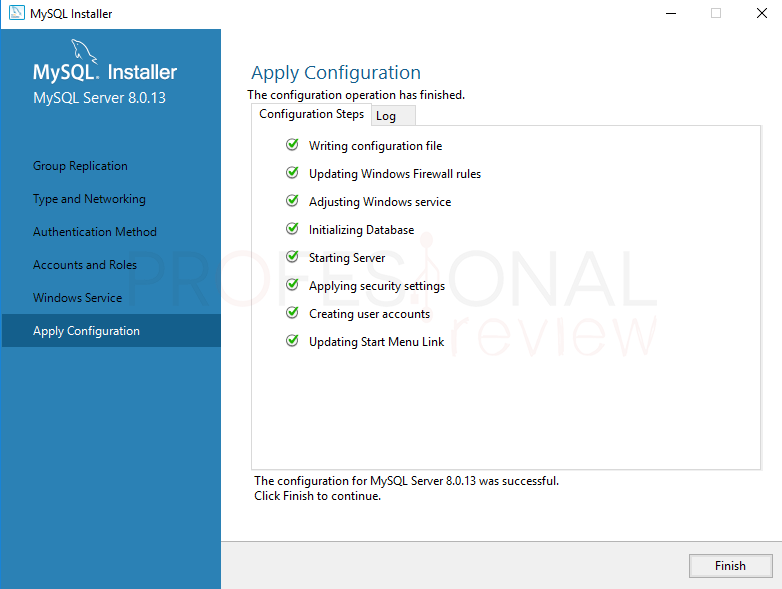

¿Qué es MySQL? - Concepto
En programación es prácticamente inevitable trabajar con algún tipo de sistema de gestión de bases de datos. Cualquier programa que imaginemos tarde o temprano necesitará almacenar datos en algún lugar, como mínimo para poder almacenar la lista de usuarios autorizados, sus permisos y propiedades.
MySQL es el sistema de gestión de bases de datos relacional más extendido en la actualidad al estar basada en código abierto. Desarrollado originalmente por MySQL AB, fue adquirida por Sun MicroSystems en 2008 y esta su vez comprada por Oracle Corporation en 2010, la cual ya era dueña de un motor propio InnoDB para MySQL.
MySQL es un sistema de gestión de bases de datos que cuenta con una doble licencia. Por una parte es de código abierto, pero por otra, cuenta con una versión comercial gestionada por la compañía Oracle.
Ver másCaracterísticas
MySQL posee la característica de no procesar las tablas directamente sino que a través de procedimientos almacenados es posible incrementar la eficacia de nuestra implementación. Desencadenantes MySQL permite además poder automatizar ciertas tareas dentro de nuestra base de datos.
Arquitectura Cliente y Servidor: MySQL basa su funcionamiento en un modelo cliente y servidor. Es decir, clientes y servidores se comunican entre sí de manera diferenciada para un mejor rendimiento. Cada cliente puede hacer consultas a través del sistema de registro para obtener datos, modificarlos, guardar estos cambios o establecer nuevas tablas de registros, por ejemplo.
Compatibilidad con SQL: SQL es un lenguaje generalizado dentro de la industria. Al ser un estándar MySQL ofrece plena compatibilidad por lo que si has trabajado en otro motor de bases de datos no tendrás problemas en migrar a MySQL.
Ver másProceso de instalación
- Paso 1: Una vez que la descarga se haya completado, haz doble click sobre el archivo recién descargado para lanzar el proceso de instalación. Es necesario que lo hagas desde un usuario con permisos de administrador y que aceptes los permisos que te pedirá el administrador de cuentas.
- Paso 2: Segundos después de aceptar este permiso, se abrirá el instalador de MySQL y en la primera pantalla te mostrará la licencia de uso que deberás aceptar marcando la casilla correspondiente y después pulsar sobre Next. 
- Paso 3: Ahora el instalador te preguntará qué tipo de instalación quieres realizar. La elección dependerá del uso que vayas a hacer del software y también de la experiencia que tengas. Si vas a crear tus propias bases de datos desde cero, necesitarás utilizar herramientas de desarrollo y plugins para ciertas aplicaciones, por lo que la opción Developer Default o Full son las idóneas
Ver más
Video de proceso de instalación